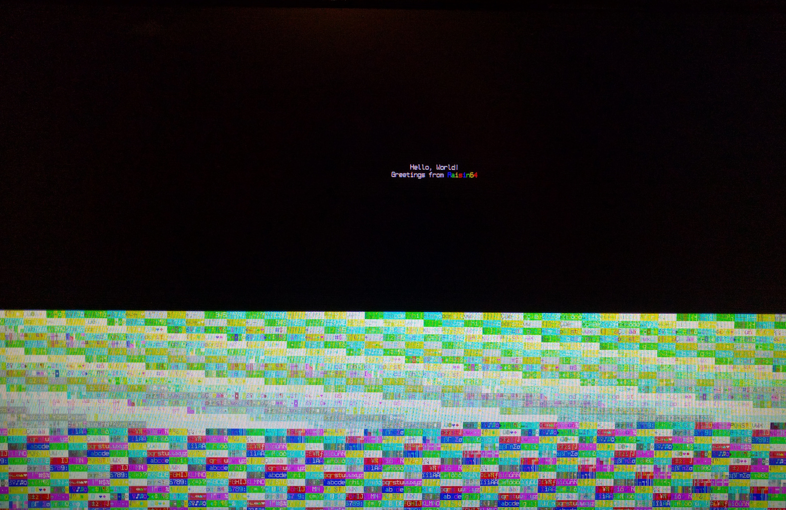

Code Snippets and Software¶
Each instruction page contains an example of how to use that specific opcode which will not be repeated here. Instead, a few simple programs will pre presented that work with the Nexys 4 DDR Reference Implementation demonstrating aspects of the ISA or use of the hardware.
While having a completely different opcode format and compact instruction support, the Raisin64 drew inspiration from MIPS for it’s instruction set and mnemonics. As a result, several programs I created for a previous academic MIPS design were easily ported to the Raisin64.
Switch to LED¶
The Switch to LED program is the simplest proof of life for the Nexys 4 DDR board, reading the present position of the switches, and mirroring them onto the array of LEDs located immediately above them.
.set SW_LADR, 0x00008000
.set LED_LADR, 0x00004000
.text
#Load the sign-extended upper portion of the IO space in R1
lui $r1, 0xFFFFC000
sw_loop:
ori $r2, $r1, SW_LADR #Load the switch address in R2
lw $r3, ($r2) #and read into R3
ori $r2, $r1, LED_LADR #Now load LED address into R2
sw $r3, ($r2) #And store R3 into *R2
ji sw_loop #Repeat
add $r0, $r0, $r0 #NOP (not a delay slot) TODO Fix for assembler frag misalignment
{kind=link}
From a simulation of the external hardware, the LED port can be seen tracking the SW (switch) port soon after it changes. This can be run on the real hardware with the same result:
{kind=link}
VGA Demo Program¶
As a non-trivial test of the processor, a demo program was created exercising the VGA subsystem of the Nexys 4 DDR board located at 0xFFFFC000_0004xxxx on the data memory bus. In addition to the switch to LED functionality above, it draws a hello world string and continuously iterates through the character set and color options on the lower half of the display.
The assembly demonstrates the use of a stack, as well as useful GNU assembler tools like defines, macros, data labels, alignment, etc. Also available at: https://github.com/ChrisPVille/raisin64-nexys4ddr/blob/master/software/demo.S
1 2 3 4 5 6 7 8 9 10 11 12 13 14 15 16 17 18 19 20 21 22 23 24 25 26 27 28 29 30 31 32 33 34 35 36 37 38 39 40 41 42 43 44 45 46 47 48 49 50 51 52 53 54 55 56 57 58 59 60 61 62 63 64 65 66 67 68 69 70 71 72 73 74 75 76 77 78 79 80 81 82 83 84 85 86 87 88 89 90 91 92 93 94 95 96 97 98 99 100 101 102 103 104 105 106 107 108 109 110 111 112 113 114 115 116 117 118 119 120 121 122 123 124 125 126 127 128 129 130 131 132 133 134 135 136 137 138 139 140 141 142 143 144 145 146 147 148 149 150 151 152 153 154 155 156 157 158 159 160 161 162 163 164 165 166 167 168 169 | #-------------------------------------------------------------------------------
#Macros and defines to make life easier
.set IO_HADR, 0xFFFFC000
.set SW_LADR, 0x00008000
.set LED_LADR, 0x00004000
.set VGA_LADR, 0x00040000
.set COLOR_W, 0xF
.set COLOR_R, 0xC
.set COLOR_G, 0xA
.set COLOR_B, 0x9
.set COLOR_Y, 0xE
.set COL, 240
.set ROW, 68
#Loads the character and calls printChar (increments R16; R18 needs to be set)
.macro printCharImm char
addi $r17, $zero, \char
jali printChar
addi $r16, $r16, 1
.endm
.macro friendly_print col, row, attrib_byte, str_ptr
addi $r16, $zero, \col
addi $r17, $zero, \row
addi $r18, $zero, \attrib_byte
addi $r19, $zero, \str_ptr
jali printStr
.endm
.macro fn_enter
addi $sp, $sp, -8 #Allocate 1 word on the stack
sw $lr, ($sp) #Store the current lr on the stack
.endm
.macro fn_exit
lw $lr, ($sp) #Restore the original lr
addi $sp, $sp, 8 #Free the stack space we used
j $lr #Return
.endm
#-------------------------------------------------------------------------------
#Data segment (for the data RAM)
.data
#Stack space (grows down towards zero)
stack: .space 8*8
stack_init_head:
#String storage
hello_str: .asciz "Hello, World!"
greet_str: .asciz "Greetings from "
.align 9 #Fill 512
#-------------------------------------------------------------------------------
#Text segment (for the instruction ROM/RAM)
.text
reset:
#Setup the stack
addi $sp, $zero, stack_init_head
#Load the sign-extended upper portion of the IO space in R1
lui $r1, IO_HADR
ori $r2, $zero, 0xFFFF
ori $r3, $r1, LED_LADR #Now load LED address into R3
sw $r2, ($r3) #And store R2 into *R3
#Clear the display
jali clearDisp
#Write the plain strings
friendly_print 115 20 0x0f hello_str
friendly_print 110 21 0x0f greet_str
#Write the colorful Raisin64
addi $r16, $zero, (21*COL)+125 #Row 21, Col 125
addi $r18, $zero, COLOR_B
printCharImm 'R'
addi $r18, $zero, COLOR_G
printCharImm 'a'
addi $r18, $zero, COLOR_Y
printCharImm 'i'
addi $r18, $zero, COLOR_R
printCharImm 's'
addi $r18, $zero, COLOR_B
printCharImm 'i'
addi $r18, $zero, COLOR_G
printCharImm 'n'
addi $r18, $zero, COLOR_Y
printCharImm '6'
addi $r18, $zero, COLOR_R
printCharImm '4'
jali reset_finloop
addi $r5, $zero, COL*ROW #Final character
fin_loop:
ori $r4, $r1, SW_LADR #Load the switch address in R4
lw $r3, ($r4) #and read into R3
ori $r4, $r1, LED_LADR #Now load LED address into R4
sw $r3, ($r4) #And store R3 into *R4
jali printChar
addi $r17, $r17, 1
addi $r18, $r18, 3
addi $r16, $r16, 1
beqal $r16, $r5, reset_finloop
ji fin_loop #Repeat
reset_finloop:
addi $r16, $zero, COL*40
j $lr
#Clears display
clearDisp:
fn_enter
addi $r16, $zero, ROW*COL
add $r17, $zero, $zero
add $r18, $zero, $zero
clearDisp_loop:
beq $r16, $zero, clearDisp_done
jali printChar
subi $r16, $r16, 1
ji clearDisp_loop
clearDisp_done:
fn_exit
#Print ASCII string
# R16: Col
# R17: Row
# R18: Attribute
# R19: ASCII String (reference)
printStr:
fn_enter
addi $r4, $zero, COL #R4 gets Number of Characters in Row
mul $r17, $zero, $r17, $r4 #R17 = NumItemsInCol*RowNum
add $r16, $r17, $r16 #R16 = Buffer "Character" number
printStr_nextChar:
l8 $r17, ($r19) #R17 = Byte in string
beq $r17, $zero, printStr_done #Null-Terminator
jali printChar #Print the character
addi $r19, $r19, 1 #Increment pointers
addi $r16, $r16, 1
ji printStr_nextChar
printStr_done:
fn_exit
#Sends character to video display
# R16: Display Buffer Offset
# R17: ASCII Character
# R18: Packed Attribute
printChar:
#We are a leaf function (calls no others).
#Don't bother putting ra on the stack as we
#won't overwrite it with function calls.
slli $r20, $r18, 8
or $r20, $r20, $r17 #Prepare the packed VGA control word
andi $r20, $r20, 0xFFFF #and mask it
#Prepare the base VGA address in R2
ori $r2, $r1, VGA_LADR
slli $r21, $r16, 3 #Shift the buffer "cell" number
add $r2, $r21, $r2 #Add the cell number to the address
sw $r20, ($r2) #Store the result
j $lr
.align 11 #Fill 2K
|
Given the long fill period at reset, the simulation is simultaneously un-interesting and overwhelming. Suffice it to say, it leads to a colorful demo.
{kind=link}